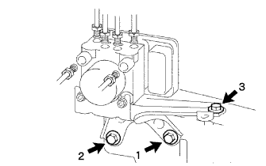
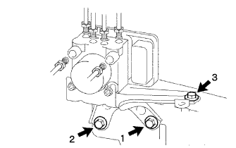

|  |
図の順にボルト3本で、ブレーキアクチュエータASSYを仮付けする。
図の順にボルト3本を本締めする。
- 基準値
- T = 19 N・m{ 195 kgf・cm }
コネクタをブレーキアクチュエータASSYに接続する。
 |
ユニオンナットレンチ10を使用して、ブレーキチューブ6本をブレーキアクチュエータASSYに接続する。
- 基準値
- T=15N·m {155kgf·cm} (規定締付けトルク)
- T’=14N·m{143kgf·cm}(ユニオンナットレンチおよびトルクレンチ230F使用時の読み)
ブレーキ アクチュエータASSY 取り付け |
| 1. ブレーキ アクチュエータASSY取り付け |
ブレーキアクチュエータASSYをナット2個、ピン1個でブレーキアクチュエータブラケットASSYに取り付ける。
| 2. ブレーキアクチュエータ ブラケットASSY取り付け |
|  |
図の順にボルト3本で、ブレーキアクチュエータASSYを仮付けする。
図の順にボルト3本を本締めする。
コネクタをブレーキアクチュエータASSYに接続する。
|
ユニオンナットレンチ10を使用して、ブレーキチューブ6本をブレーキアクチュエータASSYに接続する。
| 3. ワイヤハーネスクランプブラケット接続 |
ボルト1本を締め、ワイヤハーネスクランプブラケット接続
| 4. ブレーキシステムエア抜き |

| 5. ブレーキフルード漏れ点検 |
| 6. ブレーキアクチュエータアクティブテスト |